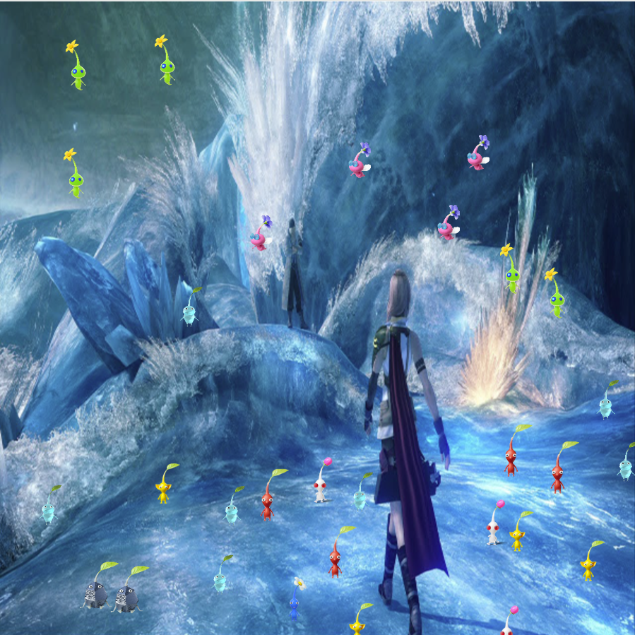

This project was about making a unique brush tool program in which I used the Pikmin as the brushes. The background is a screenshot of Lake Bresha from Final Fantasy 13.
"vivwalnuts.github.io/diyps2026/index.html"

This is my code to make this program work:
var img;
var img2;
var img3;
var img4;
var img5;
var img6;
var img7;
var img8;
var img9;
var img10;
var img11;
var img12;
var img13;
var img14;
var initials ='jm'; // your initials
var choice = '1'; // starting choice, so it is not empty
var screenbg = 250; // off white background
var lastscreenshot=61; // last screenshot never taken
function preload() {
// preload() runs once, it may make you wait
// img = loadImage('cat.jpg'); // cat.jpg needs to be next to this .js file
// you can link to an image on your github account
img = loadImage('https://dma-git.github.io/images/74.png');
img2 = loadImage('https://vivwalnuts.github.io/images/extra.png');
img3 = loadImage('https://vivwalnuts.github.io/images/LeonRE4.jpg');
img4 = loadImage('https://vivwalnuts.github.io/images/redextra.png');
img5 = loadImage('https://vivwalnuts.github.io/images/yellowextra.png');
img6 = loadImage('https://vivwalnuts.github.io/images/bluextra.png');
img7 = loadImage('https://vivwalnuts.github.io/images/wingedextra3.png');
img8 = loadImage('https://vivwalnuts.github.io/images/rockeextra.png');
img9 = loadImage('https://vivwalnuts.github.io/images/iceextra.png');
img10 = loadImage('https://vivwalnuts.github.io/images/gloweextra.png');
img11 = loadImage('https://vivwalnuts.github.io/images/bulbextra.png');
img12 = loadImage('https://vivwalnuts.github.io/images/purpleextra.png');
img13= loadImage('https://vivwalnuts.github.io/images/lake_bresha.png');
img14= loadImage('https://vivwalnuts.github.io/images/village.png');
}
function setup() {
createCanvas(600, 600); // canvas size
background(img14);
background(img13);
}
function draw() {
if (keyIsPressed) {
choice = key; // set choice to the key that was pressed
clear_print(); // check to see if it is clear screen or save image
if (key === '[') {
brushSize = brushSize + 1;
}
if (key === ']') {
brushSize = brushSize - 1;
}
}
if (mouseIsPressed){
newkeyChoice(choice); // if the mouse is pressed call newkeyChoice
}
}
function newkeyChoice(toolChoice) { //toolchoice is the key that was pressed
// the key mapping if statements that you can change to do anything you want.
// just make sure each key option has the a stroke or fill and then what type of
// graphic function
if (toolChoice == '1' ) { // first tool
strokeWeight(01);
line(mouseX, mouseY, pmouseX, pmouseY);
} else if (toolChoice == 'g' || toolChoice == 'G') { // g places the image we pre-loaded
image(img, mouseX, mouseY, 50, 50);
}else if (toolChoice == 'j' || toolChoice == 'J') { // g places the image we pre-loaded
image(img2, mouseX, mouseY, 50, 50);
}else if (toolChoice == 'l' || toolChoice == 'L') { // g places the image we pre-loaded
image(img3, mouseX, mouseY, 50, 50);
}else if (toolChoice == 'r' || toolChoice == 'R') { // g places the image we pre-loaded
image(img4, mouseX, mouseY, 50, 50);
}else if (toolChoice == 'y' || toolChoice == 'Y') { // g places the image we pre-loaded
image(img5, mouseX, mouseY, 50, 50);
}else if (toolChoice == 'b' || toolChoice == 'B') { // g places the image we pre-loaded
image(img6, mouseX, mouseY, 50, 50);
}else if (toolChoice == 'w' || toolChoice == 'W') { // g places the image we pre-loaded
image(img7, mouseX, mouseY, 50, 50);
}else if (toolChoice == 'o' || toolChoice == 'O') { // g places the image we pre-loaded
image(img8, mouseX, mouseY, 50, 50);
}else if (toolChoice == 'i' || toolChoice == 'I') { // g places the image we pre-loaded
image(img9, mouseX, mouseY, 50, 50);
}else if (toolChoice == 'q' || toolChoice == 'Q') { // g places the image we pre-loaded
image(img10, mouseX, mouseY, 50, 50);
}else if (toolChoice == 'u' || toolChoice == 'U') { // g places the image we pre-loaded
image(img11, mouseX, mouseY, 50, 50);
}else if (toolChoice == 'm' || toolChoice == 'M') { // g places the image we pre-loaded
image(img12, mouseX, mouseY, 50, 50);
}
}
function testbox(r, g, b) {
// this is a test function that will show you how you can put your own functions into the sketch
x = mouseX;
y = mouseY;
fill(r, g, b);
rect(x-50, y-50, 100, 100);
}
function clear_print() {
// this will do one of two things, x clears the screen by resetting the background
// p calls the routine saveme, which saves a copy of the screen
if (key == 'x' || key == 'X') {
background(screenbg); // set the screen back to the background color
} else if (key == 'p' || key == 'P') {
saveme(); // call saveme which saves an image of the screen
}
}
function saveme(){
//this will save the name as the intials, date, time and a millis counting number.
// it will always be larger in value then the last one.
filename=initials+day() + hour() + minute() +second();
if (second()!=lastscreenshot) { // don't take a screenshot if you just took one
saveCanvas(filename, 'jpg');
key="";
}
lastscreenshot=second(); // set this to the current second so no more than one per second
}